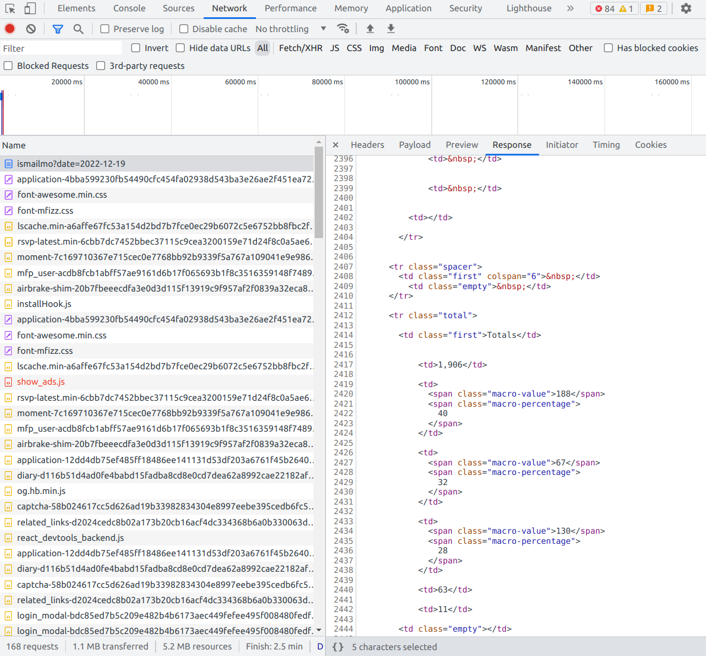

Earlier this year, I built myfitnesspal wrapped: inspired by Spotify’s famous wrapped campaign, this web app scrapes all your data from myfitnesspal (a food tracking app), processes and analyses the data, and finally gives some cool (in my opinion) statistics and charts about your dietary habits in a Streamlit app.

While I was fairly happy about how it turned out, it annoyed me how slow it got with larger date ranges, so this article will explore how I improved this by learning about and using python’s asyncio package.
1 Scraping the data
While myfitnesspal does have an API - it requires you to fill out and application form and unfortunately I was unsuccessful in my application. Luckily they do not rate limit requests to the website, so although it wouldn’t be as friendly as a well-formatted JSON response, there was still a way to get all the data.
On observation of the network requests in the browser, the food diary page is rendered server side, so my last hope of mimicking any API calls was dead - but atleast the url was easy to reason about: just a request to the diary/{user} endpoint with a query param of the date of the food diary.

2 The simple solution
In the spirit of actually finishing projects I started with a simple (naive) approach of looping through all the dates within the date range and making a request for the corresponding date on each iteration.
For this demo, we’ll scrape a weeks worth of data between 2022-12-15 and 2022-12-22:
Let’s define a function that makes a request for a given user and date with a request client:
And then scrape the diaries by looping over each date:
start_time = time.perf_counter()
sesh = requests.Session()
diaries =[]
for date in dates:
diaries.append(scrape_diary("ismailmo", date, sesh))
# grab total calories so we can compare with async example later
kcals = []
for diary in diaries:
kcals.append(pd.read_html(diary, flavor="lxml")[0].iloc[-4,1])
elapsed = time.perf_counter() - start_time
print(f"Time to scrape data: {elapsed:.2f} seconds")Time to scrape data: 4.34 secondsThis is pretty slow with just a weeks worth of data! Given that this app is supposed to be inspired by Spotify Wrapped - we would expect users to scrape a whole years worth of food diaries. The time to scrape will scale linearly with the number of diaries, so the time to scrape a years worth of data will be ~52x longer than above! And that’s assuming our app doesn’t timeout on long request/response cycles. (spoiler alert - it does and it did)
3 Speeding up with httpx and async
It seems pretty inefficient to only send one request at a time and just wait around until we get a response before sending another request - and that’s where using async python shines. It doesn’t speed up your code magically, but in scenarios like this where we are I/O bound and waiting for a response it makes a dramatic difference to the performance.
We’ll need to use a http client that has an async API so we import an async client from httpx to make our requests:
There are few changes we’ve made to the previous code. Firstly we need to define the function with async def so we can use await, this returns control back to the event loop so we can start making our other requests while we wait for the response.
start_time = time.perf_counter()
user = "ismailmo"
scraping_coroutines = []
for date in dates:
scraping_coroutines.append(async_scrape_diary("ismailmo", date, async_client))
async_diaries = await asyncio.gather(*scraping_coroutines)
# for comparison with non-async version above
async_kcals = []
for date, diary in async_diaries:
async_kcals.append(pd.read_html(diary, flavor="lxml")[0].iloc[-4,1])
async_elapsed = time.perf_counter() - start_time
print(f"Time to scrape data with async: {async_elapsed:.2f} seconds")Time to scrape data with async: 0.84 secondsOn initial glance it may seem as though we are doing the same as above: looping over each date and scraping the diary, however since we are using the async function we do not wait for the response before continuing execution of the next iteration in the loop. You can see this in ln6 where we receive a coroutine as a return value which we add to the list of scraping_coroutines. We can then wait for all of these requests to finish by using asyncio.gather and pass it the list of coroutines (one for each diary date).
Lets do a quick sense check to make sure we got the same data back:
The percentage increase in speed between the async and non async method:
For just one week’s worth of data we get a dramatic speedup but it becomes more significant as the size of the date range is greater (more pages scraped and more requests made).
4 Integrating with Streamlit
Learning and applying async was fun in itself but ultimate goal for this optimisation is a better user experience, so the final steps are to incorporate this change into our app. Thanks to Streamlit, this is actually pretty easy. We just have to refactor our scraping function, using the principles above, and then run our app in an async loop, you can see all the changes made to go from sync -> async in this pull request.
# main.py (entry point for streamlit app)
async def main():
# put your streamlit app setup here
# e.g set
...
st.set_page_config(
...
)
# add in other UI elements here e.g. title, input data etc
diary_df = await get_diary_for_range(start_date, end_date, mfp_user)
if __name__ == "__main__":
asyncio.run(main())And that’s it! Since Streamlit just runs the main.py file from top to bottom on each render, this keeps things pretty simple and we can just use asyncio like you would in any other python application or script.